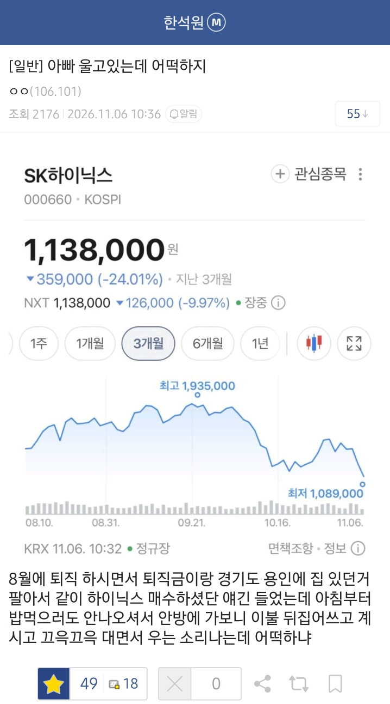
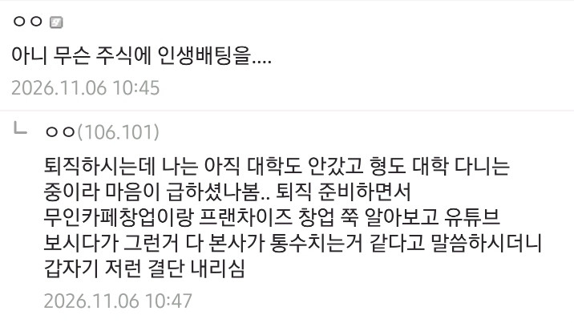

평단 160이면 그래도 가능성있지 않나 200넘어간 애들보다는 훨낫지
평단 160따위가 어딜
220층 소환!!!!
무서운건 290층도 있다는거임
300층 탑동도 아직 거주민이 있긴 하겠지?
240층 거주민인데 그냥 반년 무급노동했다고 생각하기로 함
아빠가 울면 진짜 ㅈ된거 라는거임
안팔면 손해아님
레버리지로 지금 갈아 타라고 해
쥐는 한 구멍에만 의존하지 않는다 했는데 사람이...
AI는 그래도 미래에 어떻게 될지 모르니까 버틸만 하지 않나
고점인줄알았는데 에이 160만원이면 그냥 배당받으면서 기다리면 오르지
문제는 직장을 다니면서 하는것이 아니라
저걸로 생활비나 이런것도 해야하는 상황이면 정말 힘든것이고
돈 나올 곳이 있으면 버티면서 간간히 물타면 충분히 회복가능한 선인데
하필 퇴직금이라...
160이면 좀만 참으면 다시 올텐데
난 200층 넘어 시발
아빠가운다?....ㄷㄷㄷㄷㄷㄷ
아빠가 울면 ㄹㅇ 좆된거 ㅋㅋㅋ
본사가 통수 어쩌고 하면서 허상의 리스크까지 생각하던 사람이 주식몰빵은 신기하긴 하다ㅋㅋ 본인이 본인 통수를 친거니 어쩔 수 없나
160이면 이라고 말할려고 검색했는데 지금 117이구나 100 깨지면 진짜 한 10년 넘어야 할꺼 같은데
160이니깐 우는거지 200층 이상은 울 힘도 없을듯.
아빠가 울면 진짜 ㅈ된건데..
올해안에 100 깨질까
ai 붐이 살아날 수 있을까
평단270인 나도 안우는데!
본문에 아빠도 우는데 너는 왜 안울어
넌 좀 울어도돼..
270이면 자랑스럽게 생각해라 넌 역사를 산거야
인증마크!!!
삼전 26층은 든든국밥이네..
병신ㅋㅋ
엄마가 운다 << 위로해드림, 아빠가 운다 << 좆됨
병신같은 정부는 언제는 코스피 상승하니까 자화자찬하더니 이렇게 폭락하고 개인들 피눈물 흘리니까 암말도 안하고 입꾹닫하네 어휴 ㅉㅉ 말에 책임지지도 않는거 보면 진짜 알만하다 이번정부
요즘 이딴 병신같은 애들 왜케 많이보이지?
그럼 정부가 뭐 다 살려줘?ㅋㅋㅋ
근데 정부가 개입해서 국민연금 리벨런싱 막은게 영향 없지는 않지. 그때 개입안하고 리벨런싱 했으면 지금 이렇게 쳐맞을때 어느정도 방어는 가능한데 외국인들 돈잔치 하게 만들어준것도 있어서
서울자가사는김부장 딱 그꼴이네 다시 일하셔야지 어쩌겠음
평단 160이면 ㅅㅂ 기만아니냐
170에 액면분할 할까 싶어 두 개 사놨는데 얘가 미장에서 버는 거 다 끌어내림 ㅋㅋㅋㅋ
160이면 복구하지 무슨 하닉이 구멍가게도 아니고 ㅋㅋㅋ
160 이면 그래도 희망이 보이지 250 위로는 ...
200이상도 많을거 같은데
평단 160이면 그래도 가능성 충분한데
평160이면 난복구충분가능봄 반도치가 아직죽은것도아니고
안팔고 이삼년버티면 3배가 되있을수도 있겠지
존버 버티면 오른다 시발 제발
평단 160이면 무조건 5년이면 복구되겠다